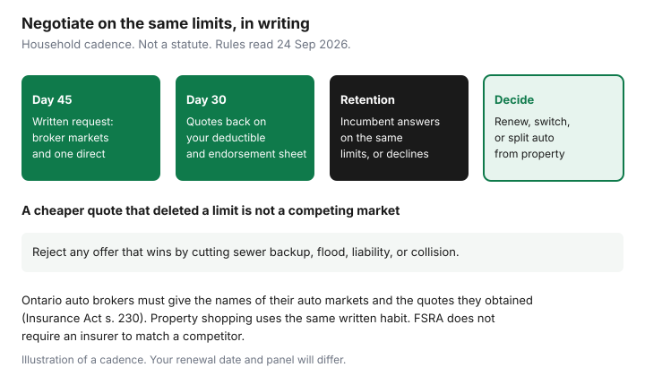

Insurance · Canada
Renewal Negotiation in Canada: Broker Leverage vs Direct Insurer Retention Offers
A renewal that auto-debits is a decision you did not make. The insurer has already chosen next year’s price. Your leverage is a written set of competing markets, on the limits you actually want, early enough that you can still bind. The published broker-versus-direct explainer covers what each channel is. This page is the negotiation calendar: when you ask, what an Ontario broker must show you, when a direct insurer’s retention desk is the better phone call, and when you renew, move, or split the lines.
Forty-five days is the household rule already used on the annual review. It is not a statute that quotes must arrive on day 45. It is enough time to refuse a quote that won by deleting a limit.
Disclosure: Broker quote portals are an offer type. Saving Optimizer may earn a commission if we later add partner links. We do not currently claim insurer or broker partnerships. We do not sell policies. A portal is a way to get a written proposal, not a duty to buy. Education only.
Key takeaways
- Start 45 days before renewal, and do not leave the written request inside the last 30 days if you can help it. Binding, mortgagee letters, and a retention reply all take time.
- In Ontario, an auto broker must give you the names of every insurer they have an auto agency contract with, and the quotation information they obtained (Insurance Act, s. 230). Ask in writing.
- A direct-writer retention or winback offer counts only when it matches your limits. A discount that drops sewer backup, flood, liability, or collision is a coverage cut.
- At a true renewal, short-rate cancellation is usually not the fee in the way. The risk is the pre-authorized debit renewing a policy you never compared.
- Renew, switch, or split auto from property only after you put the lost multi-policy dollars back into the comparison.
Request competing markets in writing 30–45 days before renewal
Send one email, or one portal message you can save, to the broker who holds the file and to one direct writer that sells the line. Attach or paste your coverage sheet: liability limit, deductibles, settlement basis, drivers and kilometres, dwelling or contents limit, sewer backup, overland flood, and any scheduled items. Say you want quotes on that sheet, not on a cheaper shape. Ask for the reply before day 30.
FSRA’s Ontario auto shopping page, used 24 Sep 2026, tells consumers to get at least three quotes from direct writers, brokers, and agents, and warns that the cheapest policy is not always the one to buy. Three quotes on three different deductibles are one quote wearing three prices. Count a quote only when it hits your sheet.

If the renewal is already inside two weeks, still ask. A late quote can stop a bad PAD if the new policy can be bound before expiry. It cannot always fix a mortgagee letter that the lender wanted earlier. Next year, put the 45-day reminder on the calendar the day you bind.
Subject: Written market request before renewal on [date]
Please shop my [auto / home / tenant] renewal on the attached limits and send the results in writing before [date]. For automobile insurance in Ontario, please include the names of all insurers with whom you have an agency contract for auto, and the quotation information you obtain for me. Do not reduce a deductible, a liability limit, or an endorsement to produce a lower premium unless I agree in writing. I will not cancel the current policy until any replacement is bound.
What a broker must disclose about quotes shopped (FSRA-style expectations in ON)
Ontario splits the licence. Brokers are licensed through the Registered Insurance Brokers of Ontario. Agents and insurance companies are licensed through FSRA. A broker shops a panel. An agent represents one company. A direct writer is the company itself. FSRA’s purchasing guidance says you may ask a broker for the names of all companies they represent. The statute is narrower and stronger on auto: section 230 of the Insurance Act says a broker shall provide an applicant with the names of all insurers with whom the broker has an agency contract relating to automobile insurance, and all information the broker obtained on quotations for that applicant.
That section is an automobile rule. Use it for the car. For the house, use the same written habit even though s. 230 does not name property policies. RIBO’s published materials on take-all-comers discussions say written disclosure is required for conflicts that include insurer ownership, contingent commissions, exclusive contracts, and similar ties, and that the options shown to the client should be documented along with the client’s decision. Ask for that note. “We checked the market” is not the note.
| Ask | Auto in Ontario | Home or tenant |
|---|---|---|
| Names of markets | Section 230: every insurer the broker has an auto agency contract with | Ask anyway. There is no identical sentence in s. 230 for property. |
| Quotes obtained | Section 230 also covers quotation information the broker obtained for you | Require the declinations too: who refused, and the reason if they gave one |
| Conflicts | RIBO written disclosure of ownership, contingent commission, exclusive markets | Same conversation. A brokerage owned by an insurer should say so. |
| Price duty | FSRA’s take-all-comers supervision is about fair access to filed auto rules, not a promise of the lowest ad on the internet | No national rule that the broker must beat every direct writer |
Other provinces licence brokers through their own councils. Do not paste s. 230 into a British Columbia or Alberta email and call it the local statute. The written-market habit still works: names, quotes, declinations, and the limits you locked.
Direct-writer retention desks: when a winback beats starting over
Call the company named on the current policy and ask for a renewal review against a written competitor quote. Direct writers sometimes have a retention desk that will reprice a renewal when they see another binder-ready number. They do not have to. FSRA does not require an insurer to match a competitor. The loyalty guide’s match script is the tone. This page adds the timing: send the competitor quote while you can still stay, which means before the PAD and before you have cancelled.
A winback call after you have already left is the same test in reverse. The old company may offer a lower first term to bring you back. Compare it to the policy you just bound, on the same limits, and include any short-rate cost of leaving the new contract early. A teaser that expires at the next renewal is a one-year loan of a discount. Write down year two as “unknown” rather than assuming the winback repeats.
Stay when the retention offer meets the sheet and the dollar gap versus the best outside quote is small enough that you would not move a mortgagee clause for it. Move when the outside quote is the same sheet at a price you can point to, and the new declarations can start at or before the old expiry. The loyalty page is the three-year path. Use it if the sticker percentage is doing the persuading.
Do not shop coverage down just to win a price war
The renewal game that households lose is a lower premium bought by a thinner policy. A quote that raises the deductible from $1,000 to $2,500, drops collision, removes sewer backup, or cuts liability from $2 million to the compulsory floor is not a win. It is a different product. Reject it in writing so the file shows you saw it.
Ontario’s compulsory auto liability floor is $200,000. Household comparisons are usually run at $1 million or $2 million. A quote that “saves” money by sitting on the floor has not won a negotiation. The same idea applies to the house: replacement cost versus actual cash value is a different cheque after a fire. Read replacement cost versus actual cash value before you let a renewal change the basis.
If money is tight, the legitimate levers are an honest kilometre change, a deductible you can pay from cash, and a same-cover re-shop. Dropping flood cover on a house that has flooded, or dropping liability because the PAD has to clear, is how a tight year becomes a worse one. Hardship is not a reason to buy a product this site does not sell.
Document preferred deductibles and discounts so apples-to-apples holds
Before anyone prices the risk, write the preferences on one page and reuse it for every market. The quote spreadsheet is that page in columns. At a minimum, lock:
- Liability limit and, for Ontario auto, whether income replacement and the other optional accident benefits stay on. The accident benefits guide has the 1 July 2026 split. A renewal that quietly drops an optional benefit you still have is not “the same policy.”
- Deductibles, including a separate glass deductible if the current policy treats glass on its own.
- Discounts you actually qualify for: winter tires where the province requires an offer, multi-vehicle, claims-free, a professional or alumni group, alarm, and telematics if you will keep the device. Ask each quote to show the discount in dollars.
- Home water: sewer backup limit and deductible, overland flood limit and deductible, or the words “declined / not offered.”
If a market cannot offer one line, the remarks column says so. You then compare the price only against quotes with the same hole, or you pay the insurer that can fill it. You do not average them.
Decide: renew, switch, or split lines across two insurers
Use the written numbers, not the relationship. Three endings are enough.
| Ending | When it is the rational one | What you file |
|---|---|---|
| Renew | Retention meets the sheet, or the outside gap is smaller than the hassle of moving a mortgagee and a PAD | The match email and the renewal declarations |
| Switch | A same-limit quote is cheaper by enough to matter, and it can be bound before the old expiry | New declarations first, then cancellation of the old contract. No bare day. See the home switch or the auto switch. |
| Split | Auto is competitive at one insurer and the house is competitive at another, after you add back the multi-policy dollars you will lose | Two declarations, two PADs, and a note of the discount you gave up. The bundle worksheet is the arithmetic. |
Consumer explainers often cite about 5 to 15 percent for a multi-policy discount. That band is not a statute and not your renewal. It is a reminder to price the split with the discount removed, which the loyalty guide already walks through. A broker portal can collect the two specialist quotes. You still read the declarations before you cancel anything.
Québec, British Columbia, Manitoba, and Saskatchewan do not shop basic auto the way Ontario shops a private policy. Optional or private damage cover can still be negotiated. Do not send a public-insurer renewal through an Ontario retention script and call it optimized. The property half of a split is still a written limit sheet in every province.
Sources & date stamps
- Insurance Act (Ontario), s. 230: an auto broker provides the names of insurers with whom the broker has an automobile agency contract, and the quotation information obtained for the applicant. Cited from RIBO’s take-all-comers broker note (used 24 Sep 2026).
- FSRA, purchasing auto insurance: at least three quotes; you may ask a broker for the companies they represent; cheapest is not always the purchase. Used 24 Sep 2026.
- FSRA, working with your broker, agent, or insurance company, and FSRA take-all-comers supervision: fair access to filed auto rules. An insurer is not required to match a competitor. Used 24 Sep 2026.
- RIBO materials on written disclosure of ownership, contingent commissions, and exclusive markets, and on documenting options and the client’s decision. Used 24 Sep 2026.
- Financial Consumer Agency of Canada, get insurance: compare coverage and price together. Used 24 Sep 2026.
Frequently asked questions
When should I start a renewal negotiation in Canada?
Start about 45 days before the renewal date, and aim to have written quotes before day 30. That window is a household cadence so binding and mortgagee letters can finish. It is not a statute.
What must an Ontario auto broker disclose about quotes?
Insurance Act section 230 requires the broker to give you the names of all insurers with whom they have an auto agency contract, and the quotation information they obtained for you. Ask for declinations as well. Property policies are not named in that section, so ask for the same paper anyway.
Should I take a retention offer from my current insurer?
Take it when the offer matches your limits and deductibles in writing. A lower price that removes sewer backup, flood, collision, or liability is a coverage cut, not a match. The insurer does not have to match a competitor.
Is a multi-policy discount a reason to keep auto and home together?
Only after you price the lines apart on the same limits and add back the discount you would lose. Consumer explainers often cite about 5 to 15 percent. That is not a law and not your bill.
Is this insurance advice?
No. Education only. Broker portals are an offer type. We do not claim a partnership, and we do not sell policies.